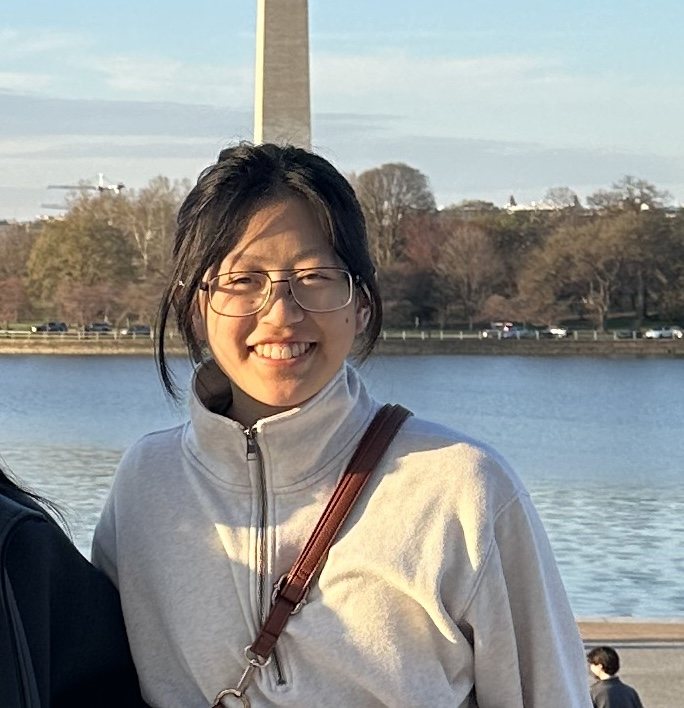

Welcome to My Website!

About Me
Hi, I’m Kate, a 3rd studying Data Science and Psychology after recently transitioning from Computer Science. My CS background gave me a solid foundation in things like software engineering, algorithms, and Python. Throughout my time at university while working on more projects, I realized what I love most isn't just writing efficient code, but using that code to glean meaningful patterns from complex datasets.
My academic background as a Data Science and Psychology major provides me with a particularly unique perspective in analyzing a mixture of operational and human-centered metrics. Projects and classes in data analysis and visualization have given me skills in utilizing Python libraries such as Pandas and Seaborn, as well as visualization tools like Tableau to transform data into intuitive dashboards. Furthermore, my training in psychological research methodology and behavioral statistics enhances my skills in data interpretation, analyzing human factors in workflow efficiency, and designing reports that drive actionable insights in the context of daily management systems.
Current project: an interactive website to navigate information within the FDA’s complete response letters!
Some of my hobbies include playing tennis, drawing, and bead weaving! I also love listening to upbeat music and going to concerts with my friends.